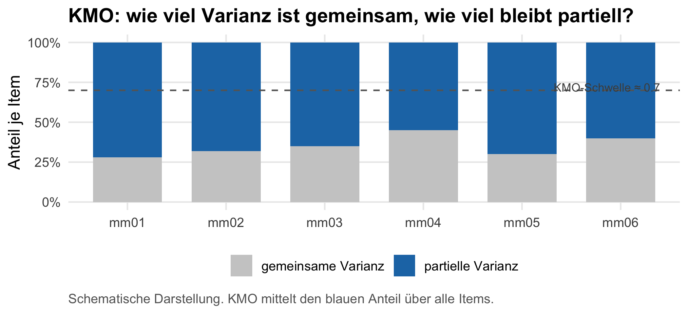
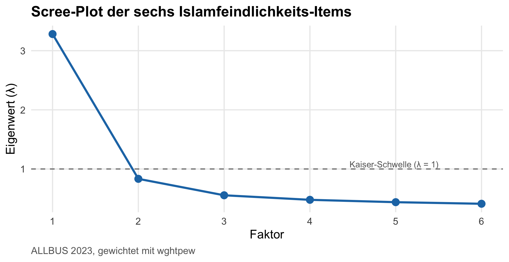
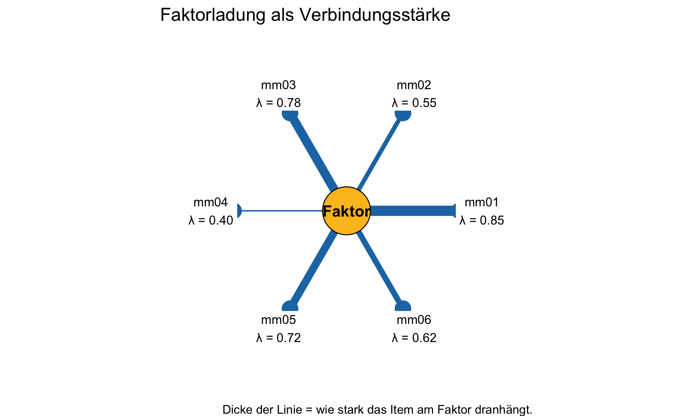
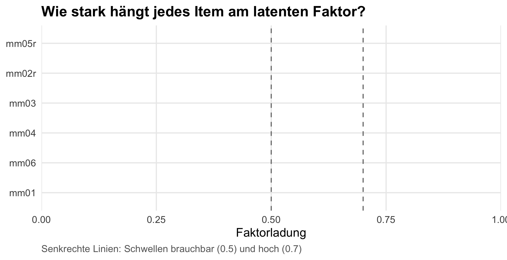
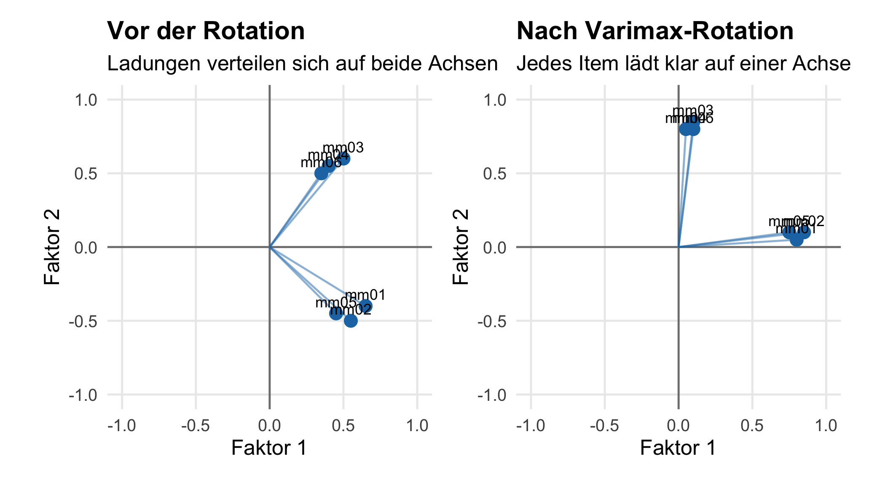
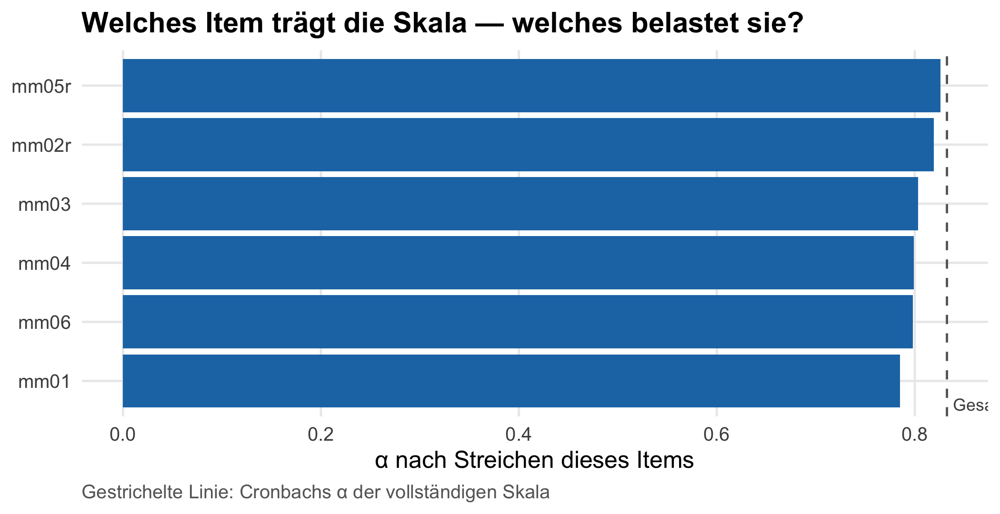
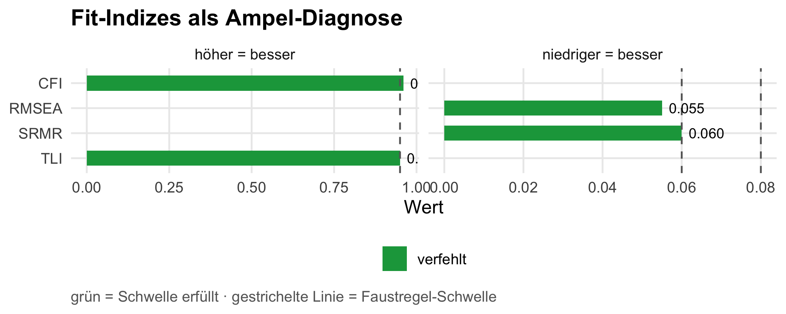

Messen die sechs Items wirklich eine einzige Einstellung — oder stecken da mehrere Dimensionen drin?
In Kapitel 5 hast du aus mehreren Items eine Skala gemacht. Aber: ist das eigentlich legitim? Lädt jedes Item gleichmäßig auf das Konstrukt, oder gibt es Ausreißer? Misst die Skala eine Sache oder mehrere? Und wie konsistent sind die Items untereinander?
Hinweis
Forschungsjournal: Wo stehst du in deiner Mini-Studie? Du hast Skalen gebaut und erste bivariate Befunde. Jetzt prüfst du den Maßstab selbst: Sind die Items dimensional sauber? Das ist der Validierungsschritt, der entscheidet, ob deine Befunde aus Kapitel 7 und die Modellierung in Kapitel 9 auf einem methodisch verteidigbaren Maß stehen. Wenn am Ende dieses Kapitels Cronbachs α > .7 und EFA + CFA ein konsistentes Bild zeichnen, hast du die Operationalisierung gegen Reviewer:innen verteidigt.
8.1 Worum es geht
Die meisten Konstrukte, die die Sozialforschung interessieren, kannst du nicht direkt messen — du kannst sie nur indirekt erschließen. Niemand kann „Intelligenz” auf einem Termometer ablesen, „Demokratiezufriedenheit” mit einem Lineal vermessen oder „Islamfeindlichkeit” als einzelnen Wert per Sensor erfassen. Das sind alles latente (verborgene) Größen. Sie zeigen sich erst, wenn du Menschen mehrere konkrete Fragen stellst und die Antworten zusammenführst — wie ein Detektiv, der einen Verbrecher nicht direkt sieht, aber aus Indizien erschließt.
Wenn du das tust, stellt sich eine Folgefrage: Wie weißt du eigentlich, dass die sechs Items wirklich zusammen ein Konstrukt messen? Vielleicht messen sie zwei verschiedene Dinge, die du nur unzulässig zusammenwirfst. Oder eines der Items reißt aus und misst etwas ganz anderes. Oder die Items hängen so unzuverlässig zusammen, dass dein Skalenwert ein blindes Rauschen ist.
Diese Validierung ist der Job dieses Kapitels. Drei Werkzeuge stehen dafür bereit, und sie bauen aufeinander auf:
Korrelationsmatrix — der einfachste Vorab-Check. Wenn die Items nicht einmal paarweise stark korrelieren, gibt es nichts gemeinsam zu messen. Faktorisierung lohnt sich erst, wenn die Inter-Item-Korrelationen mindestens mittlere Stärke haben.
Explorative Faktorenanalyse (EFA) — die statistische Antwort auf die Frage: „Wie viele unsichtbare Faktoren erklären das Muster der beobachteten Korrelationen?“ Mit der EFA prüfst du, ob deine Items wirklich eine Dimension messen, oder ob sie sich in mehrere Sub-Dimensionen aufteilen.
Reliabilität (Cronbachs α) — die Antwort auf: „Sind die Items, die zusammen einen Faktor bilden, intern konsistent genug, um ein gemeinsamer Maßstab zu sein?“ Cronbachs α ist seit den 1950er Jahren der Standardindex dafür.
Am Ende blicken wir kurz auf die konfirmatorische Faktorenanalyse (CFA) mit lavaan — den nächsten Schritt, wenn du eine konkrete Strukturhypothese prüfen statt nur erkunden willst. Die EFA fragt: „Welche Struktur passt am besten?“. Die CFA fragt: „Passt diese spezifische Struktur, die ich aus der Theorie behaupte, zu den Daten?”.
Hinweis
Konzept: Was ist eine latente Variable? Stell dir das visuell als Pfeil-Diagramm vor:
Die Pfeile gehen vom unsichtbaren Faktor zu den beobachteten Items — die Annahme ist: der Faktor erzeugt die Antworten. Wer eine hohe Islamfeindlichkeit hat, kreuzt deshalb auf allen sechs Items eher zustimmende Werte an. Genau diese Pfeil-Richtung siehst du in CFA-Pfaddiagrammen wieder.
Was du nach diesem Kapitel kannst
Eine Inter-Item-Korrelationsmatrix aufstellen, lesen und als Heatmap mit ggplot2 visualisieren.
KMO und Bartlett-Test als Voraussetzungs-Check verstehen und im efa()-Output finden.
Die Anzahl der Faktoren mit Eigenwert-Kriterium und händisch gezeichnetem Scree-Plot entscheiden.
Eine explorative Faktorenanalyse rechnen, Faktorladungen lesen und als sortierten Bar-Chart visualisieren.
Den Unterschied zwischen PCA, EFA und CFA erklären — und wissen, wann welche Methode passt.
Eine Rotation (varimax, oblimin) bewusst auswählen.
Cronbachs α berechnen, Item-Statistiken lesen, problematische Items identifizieren und α-if-deleted als Bar-Chart prüfen.
Ein einfaches CFA-Modell mit lavaan aufsetzen und Fit-Indizes interpretieren.
8.2 Inter-Item-Korrelationen
8.2.1 Der Vorab-Check vor jeder Faktorenanalyse
Stell dir vor, sechs Reporter:innen schicken ihre Berichte zur selben Lage. Wenn fünf davon ein ähnliches Bild zeichnen und einer komplett woanders steht — dann weißt du schon vor jeder Analyse: fünf messen vermutlich dasselbe, einer messt etwas anderes. Genau diese Vorab-Diagnose machen Inter-Item-Korrelationen für deine Skala.
Sie sind die Grundvoraussetzung für jede sinnvolle Faktorisierung: Wenn die Items paarweise nicht miteinander korrelieren, gibt es nichts gemeinsam zu messen — eine EFA würde keine Faktoren finden, weil keine da sind.
Hinweis
Hintergrund: Was misst eine Korrelation mathematisch? Die Pearson-Korrelation \(r\) ist die standardisierte Kovarianz — sie misst, wie stark zwei Variablen gemeinsam von ihrem jeweiligen Mittelwert abweichen, relativ zu ihrer Einzelstreuung:
Lies sie als: „wie stark schwingen x und y gemeinsam — in Einheiten der typischen Schwingung jeder Variable einzeln.” Durch die Division steht \(r\) immer zwischen \(-1\) (perfekt gegenläufig) und \(+1\) (perfekt gleichläufig). Genau diese Zahl bekommst du im pearson_cor()-Output für jede Item-Paarung.
8.2.2 Matrix berechnen
Frage: Wie stark hängen die sechs Islamfeindlichkeits-Items untereinander zusammen?
Pearson Correlation: 6 variables [Weighted]
mm01 x mm02r: r = 0.459, p < 0.001 ***
mm01 x mm03: r = 0.520, p < 0.001 ***
mm01 x mm04: r = 0.548, p < 0.001 ***
mm01 x mm05r: r = 0.488, p < 0.001 ***
mm01 x mm06: r = 0.536, p < 0.001 ***
mm02r x mm03: r = 0.368, p < 0.001 ***
mm02r x mm04: r = 0.361, p < 0.001 ***
mm02r x mm05r: r = 0.450, p < 0.001 ***
mm02r x mm06: r = 0.381, p < 0.001 ***
mm03 x mm04: r = 0.548, p < 0.001 ***
mm03 x mm05r: r = 0.348, p < 0.001 ***
mm03 x mm06: r = 0.524, p < 0.001 ***
mm04 x mm05r: r = 0.341, p < 0.001 ***
mm04 x mm06: r = 0.564, p < 0.001 ***
mm05r x mm06: r = 0.363, p < 0.001 ***
15/15 pairs significant (p < .05), N = 3321
8.2.3 Schwellen lesen
mariposa gibt dir eine sauber formatierte Matrix mit Pearson-r, p-Werten und N pro Zelle. Drei Schwellen helfen dir, was du siehst sofort einzuordnen:
Inter-Item-r
Lesart
< 0.20
Fremdkörper-Item — misst vermutlich etwas anderes
0.30 – 0.70
gesunder Bereich — Items hängen zusammen, aber nicht redundant
> 0.85
Redundanz — zwei Items messen fast dasselbe; eines fast überflüssig
Hinweis
Reviewer-Hinweis. Eine Inter-Item-Korrelationsmatrix gehört in den Anhang eines empirischen Papers, das eine selbstgebaute Skala benutzt. Sie ist der schnellste Sanity-Check für die Operationalisierung — wer dort einen Wert nahe 0 oder über 0.85 sieht, fängt an, sich Sorgen zu machen.
8.2.4 Heatmap mit ggplot2
Eine Tabelle mit fünfzehn Zahlen liest sich zäh. Die gleiche Information als Heatmap ist auf einen Blick lesbar — dunkle Felder = starker Zusammenhang. Wir bauen sie händisch aus dem pearson_cor()-Output:
cor_obj<-allbus|>pearson_cor(mm01, mm02r, mm03, mm04, mm05r, mm06, weights =wghtpew)cor_obj$matrices[[1]]$correlations|>as_tibble(rownames ="Item1")|>pivot_longer(-Item1, names_to ="Item2", values_to ="r")|>ggplot(aes(Item1, Item2, fill =r))+geom_tile(color ="white")+geom_text(aes(label =sprintf("%.2f", r)), color ="white", size =4)+scale_fill_gradient2(low ="#2166ac", mid ="white", high ="#b2182b", midpoint =0, limits =c(-1, 1))+labs(x =NULL, y =NULL, fill ="r", title ="Inter-Item-Korrelationen der sechs Islamfeindlichkeits-Items", caption ="ALLBUS 2023, gewichtet mit wghtpew")+coord_fixed()
Lesart. Die Diagonale ist trivialerweise 1.0 (jedes Item korreliert perfekt mit sich selbst). Spannend sind die Off-Diagonal-Felder: alle sechs Items zeigen Werte deutlich über 0.3 — der Spaziergangs-Reporter aus dem Bild oben gibt’s hier nicht, alle messen offensichtlich dieselbe Richtung. Damit ist der Vorab-Check bestanden; die EFA kann starten.
Wichtig
mariposa-Tipp: Volle Matrix aus dem pearson_cor()-Objekt.pearson_cor() gibt dir nicht nur die Druckansicht — unter der Haube steckt ein strukturiertes Listen-Objekt. cor_obj$matrices[[1]]$correlations ist die quadratische Korrelationsmatrix (rownames = colnames = Variablennamen). Analog bekommst du $p_values, $ci_lower, $ci_upper und $n_obs als parallele Matrizen — alles, was du für eigene Visualisierungen brauchst, ohne cor() aus Base-R extra aufzurufen.
Die Inter-Item-Korrelationen sind grün — alle Items hängen zusammen, keiner ist Fremdkörper. Jetzt geht es an die eigentliche Faktorenanalyse. Sie ist das statistische Röntgengerät: Sie nimmt die beobachteten Korrelationen und versucht zu erschließen, wie viele unsichtbare Dimensionen dahinter stehen müssen, damit dieses Muster zustande kommt.
Stell dir vor, alle sechs Items werden von einer einzigen Hintergrundeinstellung getrieben. Dann müssen alle Items deutlich miteinander korrelieren — wer hohe Islamfeindlichkeit hat, kreuzt überall hoch an. Das wäre ein Ein-Faktor-Modell. Wenn aber zwei Hintergrundeinstellungen wirken (etwa „kognitive Stereotype” vs. „politisch-restriktive Haltung”), korrelieren manche Item-Paare stärker als andere — und es entsteht ein Zwei-Faktor-Modell. Die EFA prüft, welches passt.
Wir gehen das Schritt für Schritt an: erst die Voraussetzungen (KMO, Bartlett), dann die Anzahl-Entscheidung (Eigenwerte, Scree-Plot), dann die endgültigen Modelle (Ein- vs. Zweifaktor) inklusive Rotation.
8.3 Voraussetzungen prüfen — KMO und Bartlett
Bevor du die EFA überhaupt anstößt, prüfen zwei Tests, ob das Vorhaben technisch sinnvoll ist. Beide stehen automatisch oben in jedem efa()-Output — du musst sie nicht extra rechnen, aber du musst sie lesen können.
8.3.1 KMO — wie viel gemeinsame Varianz steckt überhaupt drin?
Stell dir vor, du willst aus sechs Zeitungsartikeln einen Leitartikel destillieren. Wenn die Artikel inhaltlich überlappen, kein Problem. Wenn sie aber jeweils völlig eigene Themen abhandeln, lässt sich nichts gemeinsam herauspressen. Genau das misst der Kaiser-Meyer-Olkin-Wert (KMO): Wie viel Anteil der Item-Varianz ist partiell (also nach Kontrolle aller anderen Items) noch übrig — und wie viel ist gemeinsam?
Die Formel im Kern: \[\text{KMO} = \frac{\sum r_{ij}^2}{\sum r_{ij}^2 + \sum a_{ij}^2}\] mit \(r_{ij}\) = paarweise Korrelationen und \(a_{ij}\) = partielle Korrelationen (Korrelationen, nachdem der Einfluss aller anderen Items herausgerechnet wurde).
Lies sie als: „welcher Anteil der Item-Beziehungen lässt sich nicht durch andere Items wegerklären — also wirklich auf einen gemeinsamen Hintergrund-Faktor zurückführen.”
Bild dazu. Stell dir pro Item zwei Anteile vor: einen gemeinsamen Teil (gut für Faktorisierung) und einen partiellen Teil (was nur dieses Item allein erklärt). KMO ist der Mittelwert des gemeinsamen Anteils über alle Items:
tibble( item =paste0("mm0", 1:6), gemeinsam =c(0.72, 0.68, 0.65, 0.55, 0.70, 0.60),)|>mutate(partiell =1-gemeinsam)|>pivot_longer(c(gemeinsam, partiell), names_to ="anteil", values_to ="wert")|>mutate(anteil =factor(anteil, levels =c("partiell", "gemeinsam")))|>ggplot(aes(x =item, y =wert, fill =anteil))+geom_col(width =0.7, position =position_stack(reverse =TRUE))+geom_hline(yintercept =0.7, linetype ="dashed", color ="grey40")+annotate("text", x =6.4, y =0.72, label ="KMO-Schwelle ≈ 0.7", color ="grey30", size =3, hjust =1)+scale_fill_manual( values =c(gemeinsam ="#1f77b4", partiell ="grey80"), labels =c("gemeinsame Varianz", "partielle Varianz"), name =NULL)+scale_y_continuous(labels =scales::percent_format(accuracy =1))+labs(x =NULL, y ="Anteil je Item", title ="KMO: wie viel Varianz ist gemeinsam, wie viel bleibt partiell?", caption ="Schematische Darstellung. KMO mittelt den blauen Anteil über alle Items.")

Lesart. Je größer der blaue (gemeinsame) Anteil, desto höher der KMO. Items mit fast nur grauer (partieller) Varianz tragen nichts zu einem gemeinsamen Faktor bei — eine EFA wäre dort sinnlos. Die Schwellen-Tabelle für die Praxis:
KMO
Stichprobeneignung
≥ 0.90
marvelous
≥ 0.80
meritorious
≥ 0.70
middling
≥ 0.60
mediocre (Untergrenze)
< 0.60
Faktorenanalyse nicht empfohlen
8.3.2 Bartlett-Test — sind die Korrelationen überhaupt von Null verschieden?
Bartletts Sphärizitätstest stellt eine konservative Mindestfrage: Ist die Korrelationsmatrix überhaupt signifikant verschieden von einer Identitätsmatrix (eine Matrix, in der nur die Diagonale 1 ist und alle Off-Diagonal-Werte 0 — also völlige Unkorreliertheit)?
Wenn der Test signifikant ist (\(p < .05\)), heißt das: „zumindest irgendeine* Korrelation in der Matrix ist von Null verschieden — also gibt es etwas zu faktorisieren.”* Bei N > 1000 ist Bartlett fast immer signifikant; er ist eher ein technischer Mindest-Check als ein inhaltliches Argument. KMO ist die viel aussagekräftigere Größe.
8.3.3 Beide aus einem Aufruf ablesen
Beides taucht oben im Standard-efa()-Output auf. Wir rufen efa() einmal mit n_factors = 1 auf — die Anzahl ist hier egal, wir lesen nur den KMO/Bartlett-Block am Anfang:
Lesart. Oben siehst du KMO und Bartlett-χ²/p. Liegt KMO ≥ 0.7 und ist Bartlett signifikant, sind die Voraussetzungen erfüllt — und die Anzahl-Entscheidung im nächsten Abschnitt kann starten.
8.4 Anzahl der Faktoren bestimmen
8.4.1 Eigenwert — wie viel Information bündelt ein Faktor?
Stell dir vor, du presst die Information aus sechs Items in einen gemeinsamen Hintergrund-Faktor. Wie viel von der gesamten Item-Variation passt in diese eine Dimension? Genau das misst der Eigenwert\(\lambda\).
Die intuitive Faustregel ist überraschend einfach: Jedes Item hat eine standardisierte Varianz von 1. Eigenwerte sind also „in Item-Einheiten” ablesbar:
\(\lambda = 1\) → der Faktor bündelt so viel Information wie ein einzelnes Item — bringt nichts.
\(\lambda = 3\) → der Faktor bündelt so viel wie drei Items — substanzieller Gewinn.
\(\lambda = 0.3\) → der Faktor bündelt weniger als ein Item — fängt nur Rauschen ein.
Daraus die Kaiser-Regel: behalte alle Faktoren mit \(\lambda > 1\). Sie ist einfach, robust und seit den 1960ern Standard — auch wenn neuere Methodik (siehe weiter unten) sie verfeinert.
8.4.2 Drei Kriterien für die Anzahl-Entscheidung
Kriterium
Entscheidungs-Regel
Stärke / Schwäche
Kaiser
alle Faktoren mit \(\lambda > 1\)
einfach; tendiert zu Überschätzung
Scree-Test
Faktoranzahl an der „Knickstelle” im Eigenwert-Plot
visuell intuitiv; subjektiv
Parallelanalyse
Vergleich mit Eigenwerten zufällig generierter Daten gleicher Größe
methodischer Goldstandard; aufwendiger
In den meisten Methoden-Lehrbüchern wird mittlerweile die Parallelanalyse empfohlen (über psych::fa.parallel()); für unseren Workshop reicht die Kombination aus Kaiser + visueller Scree-Plot — beides sehen wir direkt im nächsten Schritt.
8.4.3 Scree-Plot — die Knickstellen-Diagnose
Der Scree-Plot (englisch scree = Geröllhang) zeigt die Eigenwerte als absteigende Linie. Stell dir einen Berg mit großen Felsbrocken oben und feinem Geröll unten vor: oben sind die „echten” Faktoren, unten die Rauschfaktoren. Genau diese Trennstelle suchst du.
Aus dem efa()-Objekt liest du die Eigenwerte über $eigenvalues heraus und plottest sie händisch:
efa_obj<-allbus|>efa(mm01, mm02r, mm03, mm04, mm05r, mm06, weights =wghtpew, n_factors =1)tibble( faktor =seq_along(efa_obj$eigenvalues), eigenwert =efa_obj$eigenvalues)|>ggplot(aes(x =faktor, y =eigenwert))+geom_line(color ="#1f77b4", linewidth =1)+geom_point(color ="#1f77b4", size =3)+geom_hline(yintercept =1, linetype ="dashed", color ="grey50")+annotate("text", x =5.5, y =1.08, label ="Kaiser-Schwelle (λ = 1)", color ="grey40", size =3, hjust =1)+scale_x_continuous(breaks =seq_along(efa_obj$eigenvalues))+labs(x ="Faktor", y ="Eigenwert (λ)", title ="Scree-Plot der sechs Islamfeindlichkeits-Items", caption ="ALLBUS 2023, gewichtet mit wghtpew")

Lesart. Du suchst zwei Signale: (a) wie viele Faktoren liegen über der Kaiser-Linie (\(\lambda > 1\))? (b) Wo ist der deutlichste „Knick” in der Linie? Ein klar abgesetzter erster Eigenwert + flacher Rest = klassisches Bild einer eindimensionalen Skala. Zwei deutlich erhobene Werte = Hinweis auf zweidimensionale Struktur.
8.5 Einfaktor-Lösung extrahieren
Du hast die Voraussetzungen geprüft und die Anzahl-Entscheidung getroffen. Jetzt das eigentliche Modell mit dem Fokus auf die Faktorladungen.
8.5.1 Was ist eine Faktorladung?
Stell dir einen unsichtbaren Faktor als einen Drehknopf. Wer den Knopf nach oben dreht, kreuzt auf manchen Items stark zustimmend an — die Ladung ist hoch. Auf anderen Items reagiert die Antwort kaum mit — die Ladung ist niedrig. Die Faktorladung ist genau dieser Verbindungsgrad zwischen Item und Faktor.
Mathematisch ist die Ladung in der Einfaktor-Lösung gleich der Korrelation zwischen Item und Faktor — sie geht von \(-1\) bis \(+1\), mit den gewohnten Schwellen:
Ladung
< 0.30
irrelevant
0.30 – 0.50
mäßig
0.50 – 0.70
brauchbar
≥ 0.70
hoch (Item ist Kernindikator)
Bild dazu. Der Faktor in der Mitte, die Items strahlen aus — Linien-Dicke = Ladungsstärke. Items mit dicker Linie hängen stark am Faktor, Items mit dünner Linie hängen schwach:
faktor_radial<-tibble( item =paste0("mm0", c(1, 2, 3, 4, 5, 6)), ladung =c(0.85, 0.55, 0.78, 0.40, 0.72, 0.62), winkel =seq(0, 2*pi, length.out =7)[1:6])|>mutate(x =cos(winkel), y =sin(winkel))ggplot(faktor_radial)+geom_segment(aes(x =0, y =0, xend =x, yend =y, linewidth =ladung), color ="#1f77b4", lineend ="round")+geom_point(aes(x =x, y =y), size =5, color ="#1f77b4")+geom_label(aes(x =x*1.20, y =y*1.20, label =sprintf("%s\nλ = %.2f", item, ladung)), size =3.2, label.size =NA, fill ="white")+annotate("point", x =0, y =0, size =16, color ="black", fill ="#fbbf24", shape =21)+annotate("text", x =0, y =0, label ="Faktor", fontface ="bold", size =4)+scale_linewidth_continuous(range =c(0.5, 3.5))+coord_fixed(xlim =c(-1.5, 1.5), ylim =c(-1.5, 1.5))+theme_void()+theme(legend.position ="none")+labs(title ="Faktorladung als Verbindungsstärke", caption ="Dicke der Linie = wie stark das Item am Faktor dranhängt.")

Lesart. Items wie mm01 (λ = 0.85) sind Kernindikatoren — sie reagieren stark, wenn der Faktor sich „dreht”. Items wie mm04 (λ = 0.40) sind nur Randindikatoren. Die Ladungen aus der echten EFA unten siehst du gleich in der Output-Tabelle und als Bar-Chart.
KMO + Bartlett (oben) — wie bereits in Kapitel 8.3 gelesen.
Varianzanteil — wie viel der gemeinsamen Item-Varianz der Faktor erklärt. In gut funktionierenden Einfaktor-Skalen typischerweise 40–60 %.
Ladungen (unten) — eine Spalte PC1, in der jedes Item seinen Verbindungsgrad zum Faktor steht.
8.5.3 Ladungen visualisieren
Eine Tabelle mit sechs Ladungen liest sich noch gut — aber ein sortierter Bar-Chart macht auf einen Blick sichtbar, welche Items am stärksten am Konstrukt hängen und welche eher Randindikatoren sind. Auch das bauen wir händisch aus dem efa()-Objekt:
efa_1<-allbus|>efa(mm01, mm02r, mm03, mm04, mm05r, mm06, weights =wghtpew, n_factors =1)efa_1$loadings|>as_tibble(rownames ="item")|>rename(ladung =PC1)|>ggplot(aes(x =ladung, y =fct_reorder(item, ladung)))+geom_col(fill ="#1f77b4")+geom_vline(xintercept =c(0.5, 0.7), linetype ="dashed", color ="grey50")+scale_x_continuous(limits =c(0, 1), expand =c(0, 0))+labs(x ="Faktorladung", y =NULL, title ="Wie stark hängt jedes Item am latenten Faktor?", caption ="Senkrechte Linien: Schwellen brauchbar (0.5) und hoch (0.7)")

Lesart. Items über 0.7 sind Kernindikatoren des Konstrukts; alles zwischen 0.5 und 0.7 ist brauchbar; alles unter 0.5 würde man theoretisch begründet behalten oder empirisch begründet entfernen. Der Bar-Chart ist zugleich eine Item-Trichter-Diagnose: wenn ein Item deutlich aus der Reihe fällt (z. B. < 0.3 oder mit umgekehrtem Vorzeichen), ist das ein Hinweis auf einen Polungsfehler oder ein themenfremdes Item.
8.6 Zwei-Faktor-Lösung mit Rotation
Was, wenn die Skala nicht eindimensional ist? In der Forschungsdebatte zu Islamfeindlichkeit wird mitunter zwischen kognitiv-stereotyper (z. B. mm06 „Fanatiker”) und politisch-restriktiver (z. B. mm04 „beobachten lassen”) Komponente unterschieden. Probieren wir es aus — mit zwei Faktoren und Rotation.
Hinweis
Konzept: Was ist Rotation? Wenn du mehr als einen Faktor extrahierst, ist die Aufteilung der Ladungen auf die Faktoren mathematisch nicht eindeutig — viele Lösungen sind statistisch gleichwertig. Eine Rotation ist eine geometrische Drehung der Faktor-Achsen, die eine interpretierbare Lösung erzwingt: jedes Item soll möglichst hoch auf einem Faktor laden und niedrig auf den anderen.
Drei Rotations-Familien:
"varimax" — orthogonal, Faktoren bleiben unkorreliert. Standard, wenn du die Faktoren später als unabhängige Konstrukte interpretierst.
"oblimin" / "promax" — schräg, Faktoren dürfen korreliert sein. Realistischer in den Sozialwissenschaften, wo Konstrukte selten völlig unabhängig sind.
"none" — keine Rotation. Selten, nur für reine Datenreduktion.
Faustregel: Wenn dir theoretisch klar ist, dass die Konstrukte korrelieren (Islamfeindlichkeit und Populismus sind verwandt), nimm oblimin; sonst varimax.
Bild dazu. Was bewirkt eine Rotation visuell? Sechs Items im 2D-Faktor-Raum, vor und nach einer Varimax-Rotation. Vor der Rotation laden die Items diffus auf beiden Achsen; nach der Rotation sind sie sauber an je einer Achse ausgerichtet:
items_unrot<-tibble( item =paste0("mm0", 1:6), F1 =c(0.65, 0.55, 0.50, 0.40, 0.45, 0.35), F2 =c(-0.40, -0.50, 0.60, 0.55, -0.45, 0.50))items_rot<-tibble( item =paste0("mm0", 1:6), F1 =c(0.80, 0.85, 0.10, 0.05, 0.75, 0.10), F2 =c(0.05, 0.10, 0.85, 0.80, 0.10, 0.80))baseplot<-function(d, ttl, sub){ggplot(d, aes(F1, F2, label =item))+geom_hline(yintercept =0, color ="grey50")+geom_vline(xintercept =0, color ="grey50")+geom_segment(aes(x =0, y =0, xend =F1, yend =F2), color ="#1f77b4", alpha =0.5)+geom_point(size =3, color ="#1f77b4")+geom_text(nudge_y =0.08, size =3)+coord_fixed(xlim =c(-1, 1), ylim =c(-1, 1))+labs(x ="Faktor 1", y ="Faktor 2", title =ttl, subtitle =sub)}baseplot(items_unrot, "Vor der Rotation","Ladungen verteilen sich auf beide Achsen")+baseplot(items_rot, "Nach Varimax-Rotation","Jedes Item lädt klar auf einer Achse")

Lesart. Links: keine Achse beschreibt klar einen Faktor — Items hängen schräg in der Luft. Rechts: durch die Drehung sind Items entweder fast nur an Faktor 1 angeheftet (rechts) oder fast nur an Faktor 2 (oben). Genau das macht die Interpretation lesbar: „F1 = diese Item-Gruppe, F2 = jene Item-Gruppe.”
Lesart. Du siehst jetzt zwei Spalten PC1 und PC2. Schau auf jede Zeile: lädt das Item klar auf einem Faktor (z. B. 0.78 und 0.12) oder gleichmäßig auf beiden (z. B. 0.55 und 0.49)? Klare Trennung = interpretierbare Zwei-Faktor-Lösung. Unscharfe Trennung = die Einfaktor-Lösung ist sparsamer und damit vorzuziehen — das Prinzip der Sparsamkeit (Ockhams Rasiermesser) ist in der Modellwahl ein starker Anker.
Hinweis
Hintergrund: PCA, EFA, CFA — was unterscheidet sie?
PCA (extraction = "pca", Default in mariposa) sucht Komponenten, die maximal Varianz erklären — gut für Datenreduktion.
EFA (extraction = "ml") modelliert latente Faktoren hinter den Items — gut für Theoriebildung.
CFA (mit lavaan, siehe Kapitel 8.8) prüft ein vorab spezifiziertes Faktormodell — gut für Theorieprüfung.
Faustregel: PCA für Reduktion, EFA für Erkundung, CFA für Bestätigung.
8.7 Reliabilität — Cronbachs α
8.7.1 Die Idee: ein Spaziergang-Beispiel
Stell dir vor, du fragst sechs Freund:innen, ob heute ein guter Tag für einen Spaziergang ist. Sagen alle sechs „ja klar”, weißt du: das Urteil ist konsistent — sie messen vermutlich dasselbe (Wetter, freie Zeit, Stimmung). Sagen drei „ja” und drei „nein”, misst die Skala vermutlich verschiedene Dinge — vielleicht haben drei aus dem Fenster geschaut, drei in ihren Kalender. Cronbachs α gießt genau diese Idee in eine Zahl.
Während die EFA dir sagt, wie viele Dimensionen in den Items stecken, beantwortet die Reliabilitätsanalyse eine andere Frage: „Wenn die Items eine Dimension messen — wie eng* tun sie das?“* Sie ist der zweite Validitäts-Pfeiler neben der Faktorstruktur.
8.7.2 Die Formel — und warum sie so aussieht
Cronbachs α gibt es seit 1951 (nach Lee J. Cronbach). Die Formel sieht zunächst sperrig aus, ist aber zahm:
Daraus die zentrale Faustregel: Mehr Items erkaufen Reliabilität — auch dann, wenn jedes einzelne Item nicht besser misst. Das ist auch der Grund, warum etablierte Skalen oft 8–12 Items haben statt nur 3–4.
Lesart. Der oberste Wert ist Cronbachs α. Faustregeln:
α
Bewertung
≥ 0.90
excellent
≥ 0.80
good
≥ 0.70
acceptable
≥ 0.60
questionable
< 0.60
inakzeptabel
8.7.4 Item-Statistiken lesen
mariposa gibt dir zusätzlich für jedes Item:
Item-Total-Korrelation — wie stark hängt das einzelne Item mit der Summe der anderen (das eigene weggenommen) zusammen? Schwellen: ≥ 0.30 brauchbar, ≥ 0.50 stark.
α if item deleted — wie würde sich α verändern, wenn dieses Item entfernt würde?
Daraus liest du sofort, welches Item die Skala trägt — und welches sie eher belastet:
α steigt beim Entfernen → das Item passt nicht zur Skala, Kandidat zum Streichen.
α sinkt beim Entfernen → das Item trägt zur Reliabilität bei, behalten.
8.7.5 α-if-deleted visualisieren
Auch hier macht ein Bar-Chart den diagnostischen Blick auf einen Schlag möglich. Wir extrahieren $item_total$alpha_if_deleted aus dem mariposa-Objekt und legen die Gesamtschwelle als horizontale Referenzlinie:
rel_obj<-allbus|>reliability(mm01, mm02r, mm03, mm04, mm05r, mm06, weights =wghtpew)rel_obj$item_total|>ggplot(aes(x =alpha_if_deleted, y =fct_reorder(item, alpha_if_deleted)))+geom_col(fill ="#1f77b4")+geom_vline(xintercept =rel_obj$alpha, linetype ="dashed", color ="grey40")+annotate("text", x =rel_obj$alpha, y =0.6, label =sprintf("Gesamt-α = %.2f", rel_obj$alpha), color ="grey30", size =3, hjust =-0.05)+labs(x ="α nach Streichen dieses Items", y =NULL, title ="Welches Item trägt die Skala — welches belastet sie?", caption ="Gestrichelte Linie: Cronbachs α der vollständigen Skala")

Lesart. Balken links der gestrichelten Linie heißt: „α würde sinken, wenn ich dieses Item streiche” → Item trägt zur Skala bei, behalten. Balken rechts der Linie heißt: „α würde steigen” → Kandidat zum Streichen. In einer gut funktionierenden Skala liegen idealerweise alle Balken (links der Linie und) dicht beisammen — kein Item ist Ausreißer.
Warnung
Vorsicht: Cronbachs α ist eine Untergrenze. α unterschätzt die wahre Reliabilität unter fast allen Modellannahmen. In der modernen Methodenliteratur gilt McDonalds ω als sauberere Wahl, ist aber rechentechnisch aufwendiger (über lavaan-Modelle). Für ein Einsteigerbuch reicht α — wisse aber, dass es das gibt.
Hinweis
Reviewer-Hinweis. In einem Methodenbericht reicht nicht der α-Wert allein. Standard ist: α + Item-Total-Korrelationen aller Items + α-if-deleted aller Items — gerne in einer Tabelle oder dem Bar-Chart oben. So kann die Leser:in selbst beurteilen, ob deine Skalenbildung methodisch konsistent ist.
8.8 Konfirmatorische Faktorenanalyse als Ausblick
Bisher haben wir die Faktorstruktur exploriert. Wenn du eine konkrete Hypothese hast — etwa „die sechs Items messen einen latenten Faktor” — und diese Hypothese prüfen willst, brauchst du eine konfirmatorische Faktorenanalyse. Dafür ist mariposa nicht gemacht; das übernimmt lavaan.
Wichtig
mariposa-Tipp: Bewusste Grenze. mariposa deckt EFA, Reliabilität und (logistische) Regression ab. Für CFA und Strukturgleichungsmodelle bleiben lavaan und semPlot die Standardpakete — auch in modernen Lehrbüchern. Das ist eine bewusste Spezialisierung: jedes Werkzeug für die Aufgabe, für die es gemacht ist.
Konzept: Was sind Fit-Indizes? Eine CFA prüft, ob dein spezifiziertes Modell zu den Daten passt. Statt nur einer einzelnen Kennzahl gibt es vier Standard-Maße, die unterschiedliche Vergleichs-Perspektiven liefern:
CFI / TLI (Comparative / Tucker-Lewis Fit Index) — vergleichen dein Modell mit einem Null-Modell ohne Struktur. Werte gehen gegen 1; höher = besser.
RMSEA (Root Mean Square Error of Approximation) — absoluter Fit, korrigiert für Modellkomplexität. Werte gehen gegen 0; niedriger = besser.
SRMR (Standardized Root Mean Square Residual) — Durchschnitt der standardisierten Residuen. Niedriger = besser.
fit.measures = TRUE gibt dir alle vier auf einmal. Faustregeln: CFI/TLI ≥ 0.95, RMSEA ≤ 0.06, SRMR ≤ 0.08. Ein gutes Modell erfüllt mehrere dieser Schwellen — eine einzelne Kennzahl ist nie alleinige Entscheidung.
Bild dazu. Ein „Fit-Ampel”-Plot — vier Indizes auf einen Blick, grün = Schwelle erfüllt, rot = verfehlt (schematische Beispielwerte für ein gut passendes Modell):
tibble( index =c("CFI", "TLI", "RMSEA", "SRMR"), wert =c(0.96, 0.95, 0.055, 0.06), schwelle =c(0.95, 0.95, 0.06, 0.08), richtung =c("höher = besser", "höher = besser","niedriger = besser", "niedriger = besser"))|>mutate( erfuellt =if_else(richtung=="höher = besser",wert>=schwelle, wert<=schwelle), label =sprintf("%.3f", wert))|>ggplot(aes(x =wert, y =fct_rev(index), fill =erfuellt))+geom_col(width =0.6)+geom_vline(aes(xintercept =schwelle), linetype ="dashed", color ="grey40")+geom_text(aes(label =label), hjust =-0.2, size =3.2)+scale_fill_manual( values =c(`TRUE` ="#16a34a", `FALSE` ="#d62728"), labels =c("verfehlt", "Schwelle erfüllt"), name =NULL)+facet_wrap(~richtung, scales ="free_x", ncol =2)+labs(x ="Wert", y =NULL, title ="Fit-Indizes als Ampel-Diagnose", caption ="grün = Schwelle erfüllt · gestrichelte Linie = Faustregel-Schwelle")

Lesart. Alle vier Balken grün → Modell passt sauber. Liegt ein Index knapp daneben, ist das noch kein Beinbruch — zwei oder mehr verfehlte Indizes sind ein Warnsignal.
Mit estimator = "MLR" (Maximum Likelihood mit robusten Standardfehlern) bist du auf der sicheren Seite, wenn die Items nicht ideal normalverteilt sind. Für rein ordinale Items wäre "WLSMV" die sauberere Wahl, ist aber rechenintensiver.
Hintergrund: Wann CFA, wann nicht? Eine CFA macht Sinn, wenn:
Du eine konkrete theoretische Hypothese über die Faktorstruktur hast.
Deine Stichprobe groß genug ist (Faustregel: N ≥ 200).
Du dich auf strenge Verteilungs- bzw. Schätz-Annahmen einlässt (MLR, WLSMV bei ordinalen Items).
Wenn du Items einfach zu einer Skala zusammenfassen willst und keine Strukturhypothese prüfst, ist EFA + α der pragmatischere Weg.
Hinweis
Hintergrund: Methoden-Effekte umgepolter Items. Bei Skalen mit positiv und negativ formulierten Items (wie unserer Islamfeindlichkeits-Skala) bricht ein striktes 1-Faktor-CFA-Modell oft ein, weil die umgepolten Items miteinander korrelieren — auch nach Kontrolle des Hauptfaktors. Das ist kein inhaltlicher Sub-Faktor, sondern ein Methoden-Effekt (Akquieszenz). In der CFA löst man das, indem man Residual-Kovarianzen zwischen den umgepolten Items zulässt (mm02r ~~ mm05r). Diese Spezifikation ist methodisch sauber und in der Literatur etabliert.
Übungen
HinweisÜbung 1 · EFA der pa-Items · Reproduktion
Die Forschungsdebatte zu Populismus diskutiert, ob es sich um eine eindimensionale Einstellung handelt oder um drei Komponenten (Anti-Elitismus, People-Centrism, Manichäisches Weltbild). Führe eine EFA der sieben umgepolten pa-Items durch — zuerst mit n_factors = 1, dann mit n_factors = 3 und Varimax-Rotation. Welche Lösung passt besser?
HinweisÜbung 2 · Reliabilität der Populismus-Skala · Reproduktion
Berechne Cronbachs α für die sieben umgepolten pa-Items. Welches Item hat die schwächste Item-Total-Korrelation? Würde Streichen die Reliabilität verbessern?
Greife auf die Skala zurück, die du in der Übung am Ende von Kapitel 5 gebaut hast (eigenes Konstrukt). Prüfe sie: (a) Korrelationsmatrix, (b) EFA mit 1 Faktor, (c) Cronbachs α. Schreibe in 2–3 Sätzen, ob die Operationalisierung methodisch tragfähig ist.
Keine Musterlösung — die Übung trainiert den vollständigen Validierungsworkflow.
HinweisÜbung 4 · CFA mit lavaan · Mini-Forschungsfrage
Falls du lavaan installiert hast: Spezifiziere ein 1-Faktor-CFA-Modell für die sechs Islamfeindlichkeits-Items, lass eine Residual-Kovarianz zwischen mm02r und mm05r zu (siehe Methoden-Effekt-Hinweis oben), und prüfe Fit-Indizes. Erfüllt das Modell CFI ≥ 0.95, RMSEA ≤ 0.08, SRMR ≤ 0.08?
Forschungsjournal: Stand deiner Mini-Studie. Deine Skalen sind methodisch validiert: Cronbachs α ist akzeptabel, die EFA bestätigt eine sparsame Struktur, und die CFA (siehe Übung 4) zeigt, dass ein 1-Faktor-Modell — sobald der Polungs-Methodeneffekt zugelassen wird — gut passt. Was als Nächstes kommt: In Kapitel 9 nimmst du diese Skalen und modellierst sie als abhängige bzw. unabhängige Variablen in multivariaten Modellen.
Was du jetzt weißt
Du erstellst gewichtete Inter-Item-Korrelationsmatrizen mit pearson_cor() und visualisierst sie als Heatmap händisch in ggplot2 (Quelle: cor_obj$matrices[[1]]$correlations).
Du liest KMO und Bartlett als Voraussetzungs-Check und verstehst, was hinter den Formeln steckt.
Du extrahierst Eigenwerte aus dem efa()-Objekt und entscheidest die Anzahl Faktoren mit Kaiser-Regel und einem händisch gezeichneten Scree-Plot.
Du führst eine EFA mit efa() durch, liest Faktorladungen und visualisierst sie als sortierten Bar-Chart.
Du wählst eine Rotation (varimax, oblimin) bewusst nach theoretischer Erwartung.
Du kennst den Unterschied zwischen PCA (Datenreduktion), EFA (explorativ) und CFA (konfirmatorisch).
Du berechnest Cronbachs α mit reliability(), liest Item-Statistiken, identifizierst problematische Items und stellst α-if-deleted als Bar-Chart dar.
Du weißt, wann CFA mit lavaan sinnvoll ist und wie eine Minimalspezifikation inkl. Methoden-Effekt aussieht.
Im nächsten Kapitel (Kapitel 9) wechseln wir das Genre: statt Struktur zu Erklärung — wir modellieren Islamfeindlichkeit als abhängige Variable und prüfen, welche soziostrukturellen und politischen Prädiktoren sie am besten erklären.
Mini-Glossar: Begriffe für Latente Strukturen
Begriff
Bedeutung in einem Satz
latent
unbeobachtete Hintergrund-Variable, die durch mehrere Items indirekt gemessen wird
manifest
direkt beobachtetes Item (eine Spalte im Datensatz)